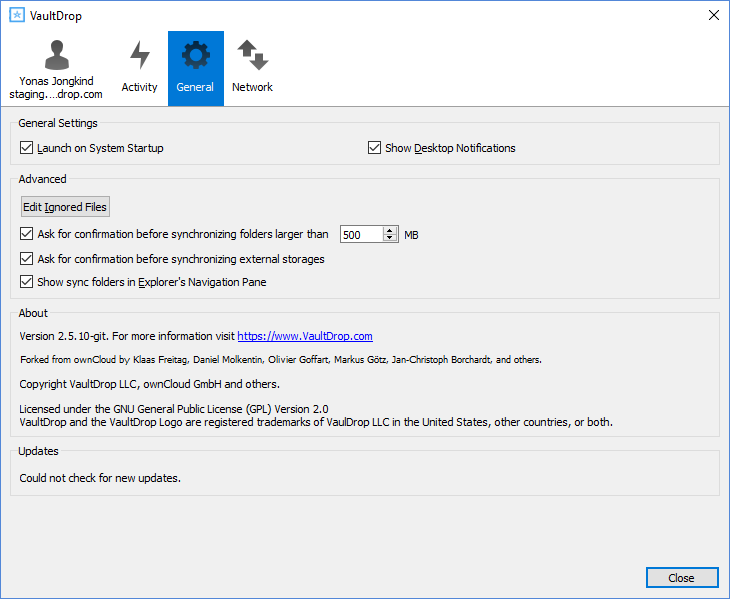

Installing the Desktop Synchronization Client
You can download the latest version of the VaultDrop Desktop Synchronization Client from the VaultDrop download page. There are clients for Mac OS X, and Microsoft Windows.
Installation on Mac OS X and Windows is the same as for any software application: download the program and then double-click it to launch the installation, and then follow the installation wizard. After it is installed and configured the sync client will automatically keep itself updated.
Installation Wizard
The installation wizard takes you step-by-step through configuration options and account setup. On the first screen it will initiate the login process in the browser.

Enter your VaultDrop login on the next screen.

On the Local Folder Option screen you may sync
all of your files on the VaultDrop server, or select individual folders. The
default local sync folder is VaultDrop, in your home directory. You may
change this as well.

When you have completed selecting your sync folders, click the Connect button at the bottom right. The client will attempt to connect to your VaultDrop server, and when it is successful you’ll see two buttons: one to connect to your VaultDrop Web GUI, and one to open your local folder. It will also start synchronizing your files.
Using the Synchronization Client
The VaultDrop Desktop Client remains in the background and is visible as an icon in the system tray (Windows, KDE) or status bar (Mac OS X).
The status indicator uses icons to indicate the current status of your synchronization. The green circle with the white checkmark tells you that your synchronization is current and you are connected to your VaultDrop server.
The blue icon with the white semi-circles means synchronization is in progress.
The yellow icon with the parallel lines tells you your synchronization has been paused. (Most likely by you.)
The gray icon with three white dots means your sync client has lost its connection with your VaultDrop server.
When you see a white circle with the letter “i” that is the informational icon, so you should click it to see what it has to tell you.
The red circle with the white “x” indicates a configuration error, such as an incorrect login or server URL.
Systray Icon
A right-click on the systray icon opens a menu for quick access to multiple operations.
This menu provides the following options:
- Quick access to your account
- Sync status
- Recent Changes, showing latest activities
- Settings
- Help menu
- Pause synchronizations
- An option to log in or log out of all of your accounts at once
- Quit VaultDrop, logging out and closing the client
A left-click on your systray icon opens the desktop client to the account settings window.
Configuring VaultDrop Account Settings
At the top of the window are tabs for each configured sync account, and three others for Activity, General and Network settings. On your account tabs you have the following features:
- Connection status, showing which VaultDrop server you are connected to, and your VaultDrop username.
- An Account button, which contains a dropdown menu with Log on, Log Out, and Remove.
- Current synchronization status.
- Add Folder Sync Connection button, which is active only when you have removed synchronization on an account (see Remove Sync below).
The little button with three dots (the overflow menu) that sits to the right of the sync status bar offers four additional options:
- Open Folder
- Choose What to Sync (This appears only when your file tree is collapsed, and expands the file tree)
- Pause Sync / Resume Sync
- Remove folder sync connection
Open Folder opens your local VaultDrop sync folder.
Pause Sync pauses sync operations without making any changes to your account. It will continue to update file and folder lists, without downloading or updating files. To stop all sync activity use Remove Folder Sync Connection.
Note
VaultDrop does not preserve the mtime (modification time) of directories, though it does update the mtimes on files.
File Manager Overlay Icons
The VaultDrop sync client provides overlay icons, in addition to the normal file type icons, for your system file manager (Explorer on Windows or Finder on Mac) to indicate the sync status of your VaultDrop files.
The overlay icons are similar to the systray icons introduced above. They behave differently on files and directories according to sync status and errors.
The overlay icon of an individual file indicates its current sync state. If the file is in sync with the server version, it displays a green checkmark.
If the file is ignored from syncing, for example because it is on your exclude list, or because it is a symbolic link, it displays a warning icon.
If there is a sync error, or the file is blacklisted, it displays an eye-catching red X.
If the file is waiting to be synced, or is currently syncing, the overlay icon displays a blue cycling icon.
When the client is offline, no icons are shown to reflect that the folder is currently out of sync and no changes are synced to the server.
The overlay icon of a synced directory indicates the status of the files in the directory. If there are any sync errors, the directory is marked with a warning icon.
If a directory includes ignored files that are marked with warning icons that does not change the status of the parent directories.
Activity Window
The Activity window contains the log of your recent activities, organized over three tabs: Server Activities, which includes new shares and files downloaded and deleted, Sync Protocol, which displays local activities such as which local folders your files went into, and Not Synced shows errors such as files not synced.
Server Notifications
Starting with version 2.2.0, the client will display notifications from your VaultDrop server that require manual interaction by you.
The desktop client automatically checks for available notifications automatically on a regular basis. Notifications are displayed in the Server Activity tab, and if you have Show Desktop Notifications enabled (General tab) you’ll also see a systray notification.
General Window
The General window has configuration options such as Launch on System Startup, Use Monochrome Icons, and Show Desktop Notifications. This is where you will find the Edit Ignored Files button, to launch the ignored files editor, and Ask confirmation before downloading folders larger than [folder size].

Using the Network Window
The Network settings window enables you to define network proxy settings, and also to limit download and upload bandwidth.
Using the Ignored Files Editor
You might have some local files or directories that you do not want to backup and store on the server. To identify and exclude these files or directories, you can use the Ignored Files Editor (General tab.)
For your convenience, the editor is pre-populated with a default list of
typical
ignore patterns. These patterns are contained in a system file (typically
sync-exclude.lst) located in the VaultDrop Client application directory. You
cannot modify these pre-populated patterns directly from the editor. However,
if
necessary, you can hover over any pattern in the list to show the path and
filename associated with that pattern, locate the file, and edit the
sync-exclude.lst file.
Note
Modifying the global exclude definition file might render the client unusable or result in undesired behavior.
Each line in the editor contains an ignore pattern string. When creating custom
patterns, in addition to being able to use normal characters to define an
ignore pattern, you can use wildcards characters for matching values. As an
example, you can use an asterisk (*) to identify an arbitrary number of
characters or a question mark (?) to identify a single character.
Patterns that end with a slash character (/) are applied to only directory
components of the path being checked.
Note
Custom entries are currently not validated for syntactical correctness by the editor, so you will not see any warnings for bad syntax. If your synchronization does not work as you expected, check your syntax.
Each pattern string in the list is preceded by a checkbox. When the check box contains a check mark, in addition to ignoring the file or directory component matched by the pattern, any matched files are also deemed “fleeting metadata” and removed by the client.
In addition to excluding files and directories that use patterns defined in this list:
- The VaultDrop Client always excludes files containing characters that cannot be synchronized to other file systems.
- Files are removed that cause individual errors three times during a synchronization. However, the client provides the option of retrying a synchronization three additional times on files that produce errors.